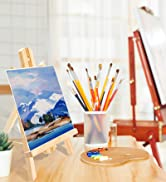
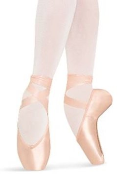

<!doctype html>
<html>
</html>
<head>
<meta charset="UTF-8">
<title>Hobbies</title>
<link rel="icon" type="image/x-icon" href="favicon.ico">
</head>
<body bgcolor="#F7DBDB">
&nbsp;When I'm not busy doing these things I love, I'm usually catching up with the latest TV shows and movies. In America, I used American sites to stream shows and movies, now that I'm in China, it's a little harder to reach those sites. When I do, I usually use Netflix, HBO Max, Disney +, and Youtube. Some of my favorite shows include Ginny and Georgia, Stranger Things, Wednesday, and Loki. As for movies, I have a few favored actors and sometimes fangirl over their newest pieces of work. I prefer action movies such as Marvel movies and etc. I rarely play video games, but when I do, I enjoy Genshin Impact, Hogwarts Legacy, and Roblox.&nbsp;&nbsp;&nbsp;&nbsp;&nbsp;&nbsp;&nbsp;When I'm not busy doing these things I love, I'm usually catching up wit the latest TV shows and movies. In America, I used American sites to stream shows and movies, now that I'm in China, it's a little harder to reach those sites. When I do, I usually use Netflix, HBO Max, Disney +, and Youtube. Some of my favorite shows include Ginny and Georgia, Stranger Things, Wednesday, and Loki. As for movies, I have a few favored actors and sometimes fangirl over their newest pieces of work. I prefer action movies such as Marvel movies and etc. I rarely play video games, but when I do, I enjoy Genshin Impact, Hogwarts Legacy, and Roblox.&nbsp;&nbsp;&nbsp;&nbsp;&nbsp;&nbsp;&nbsp;When I'm not busy doing these things I love, I'm usually catching up wi the latest TV shows and movies. In America, I used American sites to stream shows and movies, now that I'm in China, it's a little harder to reach those sites. When I do, I usually use Netflix, HBO Max, Disney +, and Youtube. Some of my favorite shows include Ginny and Georgia, Stranger Things, Wednesday, and Loki. As for movies, I have a few favored actors and sometimes fangirl over their newest pieces of work. I prefer action movies such as Marvel movies and etc. I rarely play video games, but when I do, I enjoy Genshin Impact, Hogwarts Legacy, and Roblox.&nbsp; &nbsp; &nbsp; &nbsp; &nbsp; &nbsp;
<body>
</body>
<p></p>
<h1>&nbsp;My Hobbies</h1>
<p></p>
<p></p>
<p></p>
<h2>Hobbies</h2>
<p>In my spare time, I have a lot of hobbies I enjoy participating in. Some examples of my favorite hobbies would be dancing, playing piano, playing violin, golfing, writing, reading. and making art. I was raised in America, where I was taught every one of these hobbies. My teachers taught me about how to properly set up character for myself through these lessons and that's what I'm most greatful for. Out of all these, my favorite would be reading, dancing, and making art for fun. Most people close to me would know that once my nose is in a book, there is no way to get me out of the book. Some of my favorite authors include Rick Riordan, Veronica Roth, Suzanne Collins, and Kiera Cass. I take three hours of dance class every week and I enjoy every second of it. I've made so many friends through dance and I consider them my family. As for drawing, I sketch out my ideas instead of verbally expressing them. I like to design with my art such as design buildings, people, and clothing.&nbsp; &nbsp; &nbsp; &nbsp; &nbsp;</p>
<h2>Spare Times</h2>
<p>&nbsp;</p>
<p></p>
<h2>&nbsp;Picture of Hobbies:</h2>
<p></p>
<p></p>
<p>&nbsp;</p>
<p>&nbsp;</p>

<p></p>
<p></p>
<p><a href="index.html">Return to poem&nbsp;</a></p>
<p><a href="JARVIS.html">Go to JARVIS AI System</a></p>
</body>